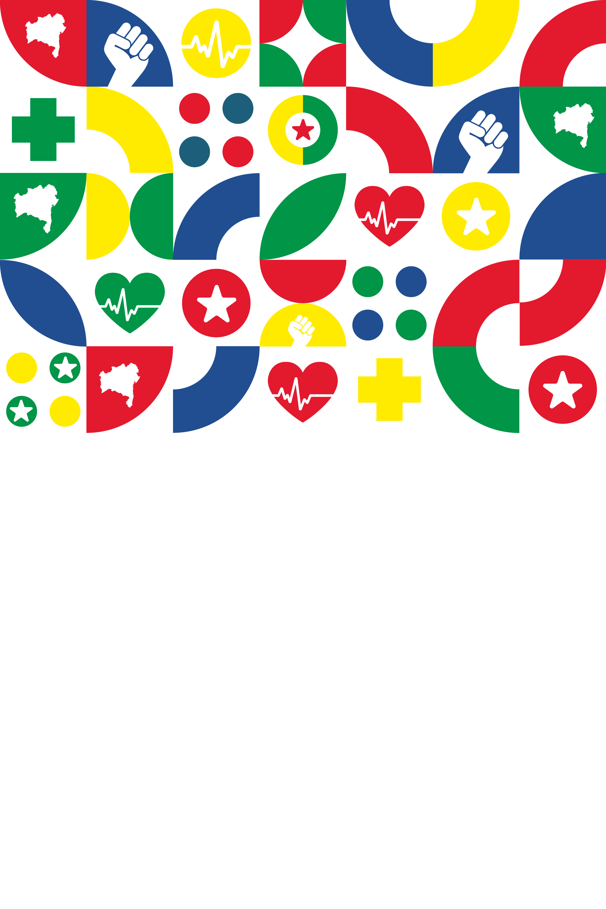
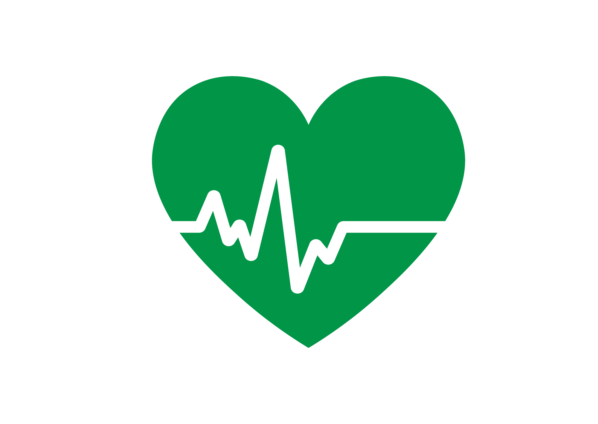
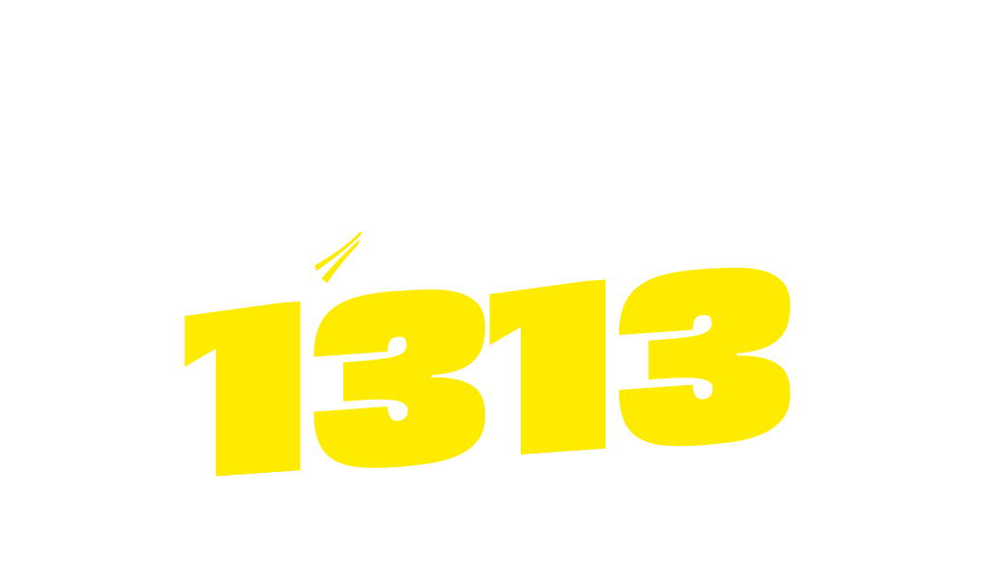
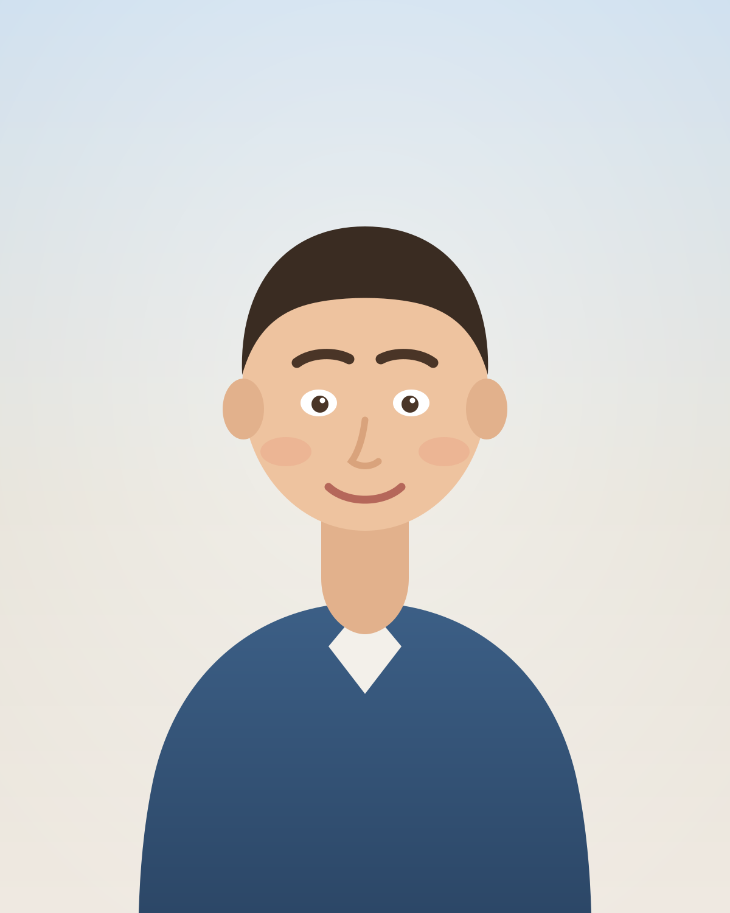
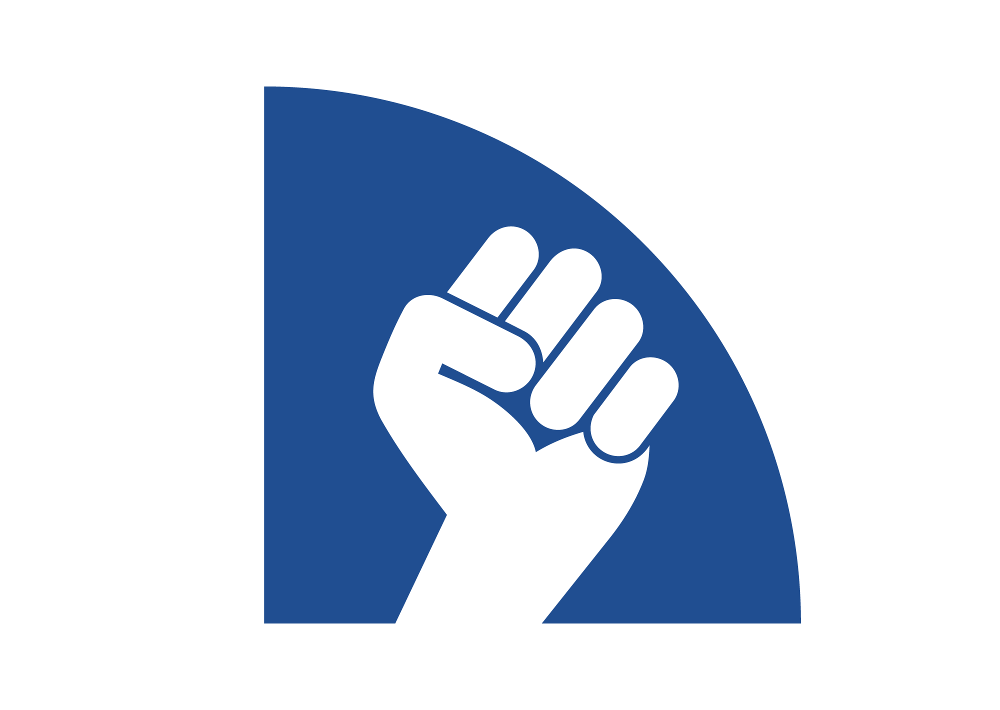

Extensão do design aprovado da família em reels-tutoriais-ui-design.html.
Esta revisão troca a abertura genérica por copy de foto de perfil, mostra a chegada à
home, o scroll e o swipe da galeria, cria uma ponte visual até Instagram/WhatsApp e reduz
os comandos a um único trilho no topo. Nenhum lockup foi redesenhado: marca e ilustrações
vêm do kit oficial.
01 · SUPERFÍCIE REVISADA
Quatro frames que definem o reel
Hook e fechamento usam ilustrações oficiais em escala grande, nunca uma estrela solta como
selo. A captura mantém o produto visível. A cena profile conclui o trabalho que o site
começou.
01 · Hook
0–2,6s
GRÁFICA


TUTORIAL · FOTO DE PERFIL
Sua foto com a moldura do Solla.
Veja como fazer pelo celular e usar no Instagram ou WhatsApp.

Correção: o tema aparece na primeira frase.
Pattern + coração são ilustrações do kit; a única assinatura é a marca completa
oficial.
03 · Galeria
swipe → tile → drawer
CAPTURA
FAÇA PARTE
Mostre que você está com Solla
Escolha um modelo, coloque seu nome ou sua foto e baixe seu card.
Card com seu nome

Moldura quadrada
1/4
Deslize e toque em “Moldura quadrada”.
Correção: badge e comando viram um só trilho
a y=88. Sem caixa preta no centro; foto, moldura e botão permanecem descobertos.
07 · Profile
~4s · clique para repetir
PASSO FINAL
Use a arte no seu perfil.
Instagram
@seuperfil
WhatsApp
Seu perfil
✓✓
Escolha a imagem baixada como nova foto de perfil.
Leitura: a própria arte baixada viaja para os
dois avatares. Mock genérico, sem rede e sem imitar telas proprietárias em detalhe.
08 · CTA
últimos 3s
GRÁFICA

AGORA É COM VOCÊ
Troque sua foto. Mostre seu apoio.
FAÇA A SUA
Acesse pelo link na bio
Escolha “Moldura quadrada”, coloque sua foto e baixe.
jorgesolla1313.com.br
Correção: o punho oficial é claramente
ilustração, não “logo de canto”. A marca completa positiva assina no fundo claro, sem
sombra ou alteração.
02 · ROTEIRO VISUAL
Oito cenas, uma continuidade espacial
Cena
Duração
O que aparece
Movimento
Trilho de comando
1 · hook
2,6s
Copy específica + coração + marca completa
eyebrow .15s; título em 2 beats; coração deriva 8px
não se aplica
2 · entrada
3,2s
topo real da home → seção #cards
pausa 450ms; scroll suave 1,6s; repouso 700ms
COMECE · “Role até ‘Mostre que você está com Solla’.”
punho entra pela esquerda; card sobe 18px; segura 1,8s
não se aplica
Sem teletransporte: a cena 2 começa no topo carregado da home, com 450ms
de repouso para orientação. O scroll é visível e contínuo até #cards. A cena
3 começa no mesmo enquadramento final, faz um swipe horizontal humano no track e só então
abre o tile. O corte acontece depois do drawer terminar de subir, nunca entre gesto e
resposta.
03 · CENA NOVA “PROFILE”
A arte baixada vira avatar — sem rede
Geometria @ 360 × 640 CSS
.profile-heading
x22 · y88 · w316; eyebrow 10px/900; título Brexter 27px/.92.
0–0,8s: heading entra em 420ms; os dois
painéis sobem 20px e estabilizam.
0,55–2,70s:.profile-card--ig aparece no centro, percorre −87/−100px e fecha em
círculo no avatar do Instagram.
0,55–3,45s:.profile-card--wa repete o gesto com +87/−100px até o WhatsApp.
3,05–3,70s: checks verdes entram com
overshoot 1,15→1; os dois painéis recebem um único halo amarelo.
3,70–4,0s: frame final parado. Nada depende
de áudio.
Renderer: recebe o mesmo
fontCss já embutido por loadFontCss; o HTML não importa
fontes nem chama rede. O executor adiciona body.play depois de o frame
recorder estar pronto.
04 · COPY POR SHOT LIST
O template carrega estrutura; o reel carrega a mensagem
HOOK
eyebrow
Tutorial · Foto de perfil
headlineLines
Sua foto com a moldura do Solla.
sub
Veja como fazer pelo celular e usar no Instagram ou WhatsApp.
CAPA
eyebrow
Tutorial do site
headlineLines
Use a moldura na sua foto de perfil.
sub
Instagram e WhatsApp, direto pelo celular.
CTA
eyebrow
Agora é com você
headlineLines
Troque sua foto. Mostre seu apoio.
action
Acesse pelo link na bio
sub
Escolha “Moldura quadrada”, coloque sua foto e baixe.
LABELS
entry.label: COMECE
step1.label: ESCOLHA A MOLDURA
step2.label: COLOQUE SUA FOTO
step3.label: CRIE SEU CARD
step4.label: BAIXE O CARD
profile.eyebrow: PASSO FINAL
cover.tag: #cards
Variáveis mínimas do shot list:graphics.hook.{eyebrow,headlineLines,accentLine,sub},
graphics.cover.{eyebrow,headlineLines,accentLine,sub,tag},
graphics.cta.{eyebrow,headlineLines,accentLine,action,sub,url},
graphics.profile.{eyebrow,headlineLines,instruction,apps} e, em cada captura,
badge.{number,total,label} + caption.parts. Nenhum texto
temático (“Crie seu card de apoio”) permanece hardcoded no template.
05 · CAPA ESPECÍFICA
A promessa sobrevive ao recorte central
TUTORIAL DO SITE
Use a moldura na sua foto de perfil.
Instagram e WhatsApp, direto pelo celular.
#cards
Regra do recorte
O núcleo central 1080×1350 equivale a
y95–545 @360. Eyebrow, headline inteira,
#cards e marca completa ficam dentro dele. O pattern pode ser cortado
porque é decoração redundante.
Brexter: 44px / .86 / tracking −.035em. As
três linhas são explícitas; o renderer não decide quebras. Se a fonte oficial não
carregar, o render falha fechado — não aceita fallback em produção.
Sem estrela isolada no canto. A assinatura única é
marca-negativa-completa.png, a 134px CSS (402px físicos), inteira e sem
filtro.
Brexter: hook, capa, títulos de profile e CTA. Inter: comando, labels, app mocks e
URL.
CÂMERA
Scroll e swipe sem zoom. Toques usam 108–114% por padrão; 118% só se o alvo continuar
inteiro. Cursor chega 180ms antes. Halo amarelo dura um pulso e some ao abrir o
drawer.
07 · CRITÉRIO DE ACEITE VISUAL
O que conferir no MP4 e na capa
1. Entrada compreensível
Há um frame orientador no topo da home, scroll contínuo até #cards e swipe real até
“Moldura quadrada”. Nenhum jump cut substitui navegação.
2. Produto não é encoberto
O rail fica em y88–138; nunca atravessa foto, moldura, controles ou CTAs. Não existe
legenda preta no centro. Em conflito real, o rail sai antes — não muda de lado em cima
do alvo.
3. Safe zone do Instagram
Instrução crítica permanece entre x22–338 e y83–416 CSS (65px laterais, 250px topo e
672px base no arquivo @3x). Marca no cap/topo e URL no rodapé são redundantes.
4. Legibilidade no mudo
Cada rail tem uma ação, no máximo duas linhas, contraste AA e ≥37,5px físicos. Hook,
profile e CTA seguram o frame final pelo tempo indicado.
5. Ponte até o perfil
A arte quadrada vista no resultado é visualmente a mesma que entra nos avatares.
Instagram aparece primeiro, WhatsApp depois; os dois terminam com a moldura visível.
6. Marca sem invenção
Lockups oficiais intactos, variante negativa sobre vermelho e positiva sobre claro.
Nada de estrela isolada como logo de canto, texto recriando “Jorge Solla”, filtros,
recoloração ou sombra nos PNGs.
7. Capa recortável
Eyebrow, headline, #cards e marca estão inteiros em y95–545. Conferir 9:16, recorte
4:5 e grade 1:1; pattern pode sangrar.
8. Fontes e nitidez
Brexter e Inter vêm embutidas; render falha fechado se faltarem. Conferir bordas
nítidas a 1080×1920, sem PNG escalado além da resolução útil e sem artefato de
compressão sobre amarelo/vermelho.